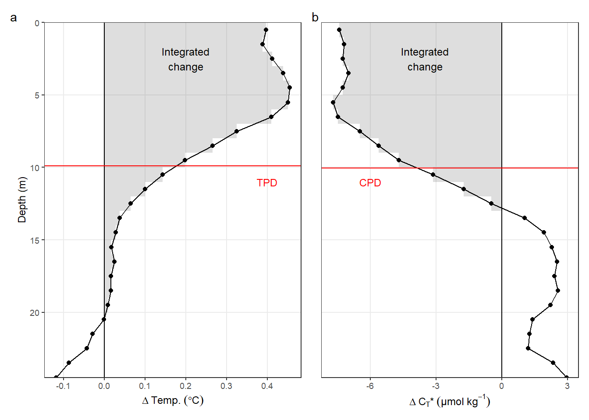
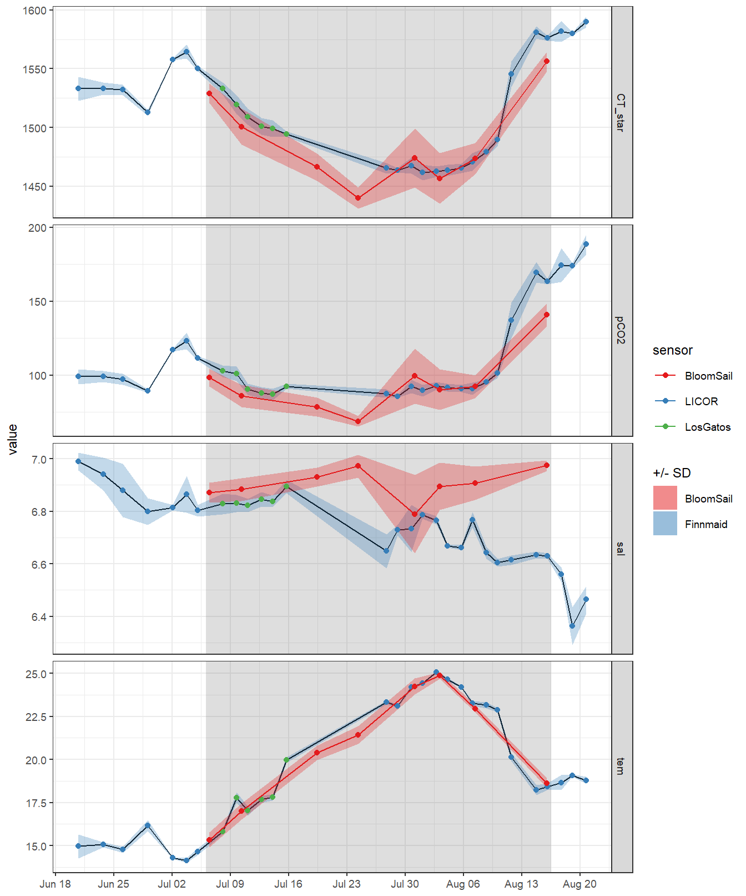
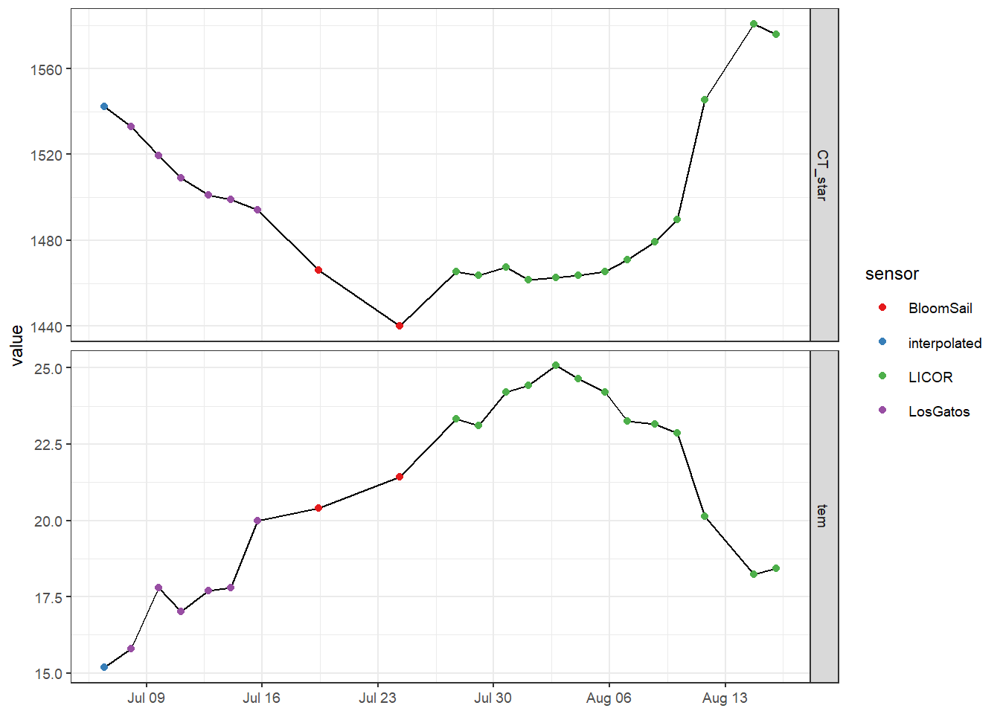
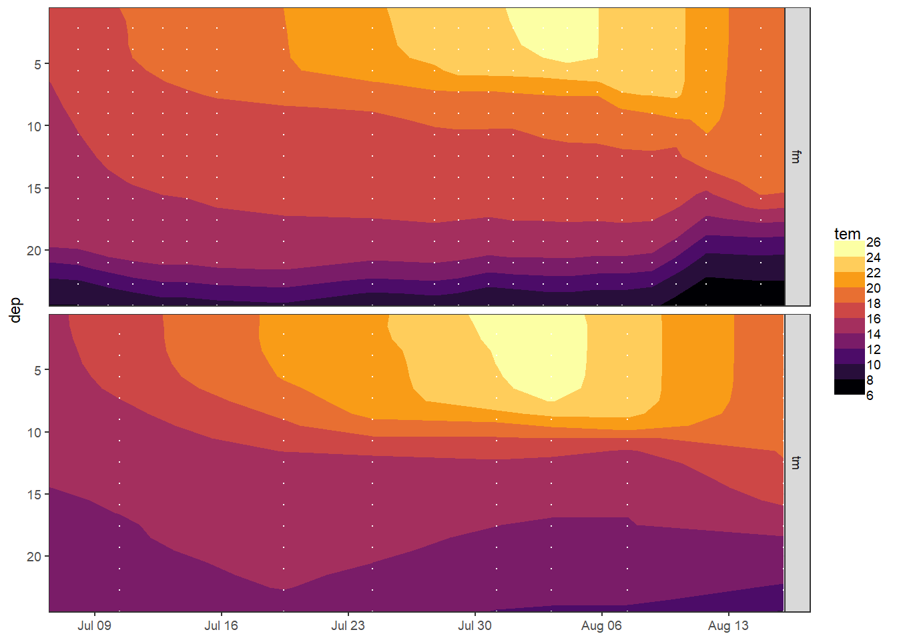
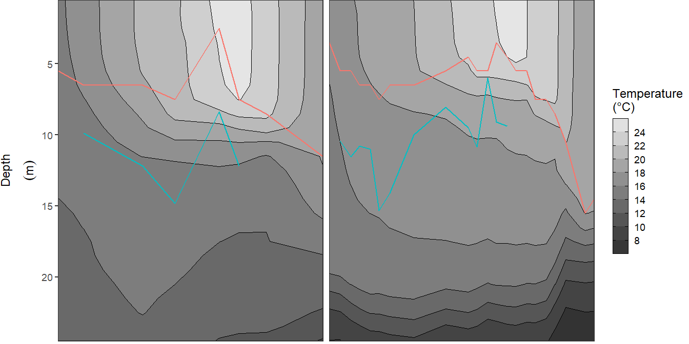
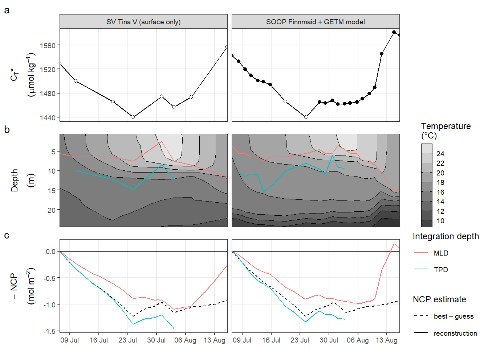

NCP reconstruction
Jens Daniel Müller
30 March, 2021
Last updated: 2021-03-30
Checks: 7 0
Knit directory: BloomSail/
This reproducible R Markdown analysis was created with workflowr (version 1.6.2). The Checks tab describes the reproducibility checks that were applied when the results were created. The Past versions tab lists the development history.
Great! Since the R Markdown file has been committed to the Git repository, you know the exact version of the code that produced these results.
Great job! The global environment was empty. Objects defined in the global environment can affect the analysis in your R Markdown file in unknown ways. For reproduciblity it’s best to always run the code in an empty environment.
The command set.seed(20191021) was run prior to running the code in the R Markdown file. Setting a seed ensures that any results that rely on randomness, e.g. subsampling or permutations, are reproducible.
Great job! Recording the operating system, R version, and package versions is critical for reproducibility.
Nice! There were no cached chunks for this analysis, so you can be confident that you successfully produced the results during this run.
Great job! Using relative paths to the files within your workflowr project makes it easier to run your code on other machines.
Great! You are using Git for version control. Tracking code development and connecting the code version to the results is critical for reproducibility.
The results in this page were generated with repository version 23acb8c. See the Past versions tab to see a history of the changes made to the R Markdown and HTML files.
Note that you need to be careful to ensure that all relevant files for the analysis have been committed to Git prior to generating the results (you can use wflow_publish or wflow_git_commit). workflowr only checks the R Markdown file, but you know if there are other scripts or data files that it depends on. Below is the status of the Git repository when the results were generated:
Ignored files:
Ignored: .Rhistory
Ignored: .Rproj.user/
Ignored: data/
Untracked files:
Untracked: data_os-2020-120_submission.zip
Untracked: output/Plots/Figures_publication/.tmp.drivedownload/
Unstaged changes:
Modified: output/Plots/Figures_publication/Appendix/Fig_B1.pdf
Modified: output/Plots/Figures_publication/Appendix/Fig_C1.pdf
Modified: output/Plots/Figures_publication/Appendix/Fig_C2.pdf
Modified: output/Plots/Figures_publication/Appendix/Fig_C3.pdf
Modified: output/Plots/Figures_publication/Article/Fig_1.pdf
Modified: output/Plots/Figures_publication/Article/Fig_2.pdf
Modified: output/Plots/Figures_publication/Article/Fig_3.pdf
Modified: output/Plots/Figures_publication/Article/Fig_4.pdf
Modified: output/Plots/Figures_publication/Article/Fig_5.pdf
Modified: output/Plots/Figures_publication/Article/Fig_5.png
Note that any generated files, e.g. HTML, png, CSS, etc., are not included in this status report because it is ok for generated content to have uncommitted changes.
These are the previous versions of the repository in which changes were made to the R Markdown (analysis/NCP_reconstruction.Rmd) and HTML (docs/NCP_reconstruction.html) files. If you’ve configured a remote Git repository (see ?wflow_git_remote), click on the hyperlinks in the table below to view the files as they were in that past version.
| File | Version | Author | Date | Message |
|---|---|---|---|---|
| Rmd | 23acb8c | jens-daniel-mueller | 2021-03-30 | revised figure according to RC1 |
| html | 16c93d2 | jens-daniel-mueller | 2021-03-30 | Build site. |
| Rmd | 7ba53a1 | jens-daniel-mueller | 2021-03-30 | revised figure according to RC1 |
| html | 5f4fb9a | jens-daniel-mueller | 2021-02-20 | Build site. |
| Rmd | 031f46a | jens-daniel-mueller | 2021-02-20 | rerun with early exclusion of negative pCO2 |
| html | 516b294 | jens-daniel-mueller | 2021-02-18 | Build site. |
| Rmd | 233bbc1 | jens-daniel-mueller | 2021-02-18 | rerun all with empty folders |
| html | 184f00b | jens-daniel-mueller | 2021-02-18 | Build site. |
| Rmd | 955ac1d | jens-daniel-mueller | 2021-02-18 | cleaning |
| html | 43f9d47 | jens-daniel-mueller | 2021-02-18 | Build site. |
| Rmd | 54ddb86 | jens-daniel-mueller | 2021-02-18 | cleaning |
| html | 3d08cda | jens-daniel-mueller | 2021-02-18 | Build site. |
| Rmd | c909ee0 | jens-daniel-mueller | 2021-02-18 | cleaning |
| html | 67dd4d7 | jens-daniel-mueller | 2021-02-18 | Build site. |
| Rmd | cc7316f | jens-daniel-mueller | 2021-02-18 | cleaning |
| html | 7014ec6 | jens-daniel-mueller | 2021-02-18 | Build site. |
| Rmd | c832869 | jens-daniel-mueller | 2021-02-18 | cleaning |
| html | 3e94656 | jens-daniel-mueller | 2021-02-18 | Build site. |
| Rmd | 93a094c | jens-daniel-mueller | 2021-02-18 | cleaning |
| html | 189f202 | jens-daniel-mueller | 2021-02-16 | Build site. |
| Rmd | 06d5293 | jens-daniel-mueller | 2021-02-16 | cleaning |
| html | 0af0021 | jens-daniel-mueller | 2021-02-15 | Build site. |
| Rmd | 4878a06 | jens-daniel-mueller | 2021-02-15 | cleaning |
| html | 70a8950 | jens-daniel-mueller | 2021-02-11 | Build site. |
| Rmd | 4bdeb1f | jens-daniel-mueller | 2021-02-11 | rerun all with empty folders |
| html | 8051798 | jens-daniel-mueller | 2021-02-10 | Build site. |
| Rmd | 9477a18 | jens-daniel-mueller | 2021-02-10 | rerun all with empty folders |
| html | b70ce3a | jens-daniel-mueller | 2021-02-04 | Build site. |
| Rmd | f8ff3d7 | jens-daniel-mueller | 2021-02-04 | resized figures |
| html | 2394871 | jens-daniel-mueller | 2021-02-03 | Build site. |
| Rmd | 6747fd9 | jens-daniel-mueller | 2021-02-03 | resized figures |
| html | d6c7395 | jens-daniel-mueller | 2021-02-02 | Build site. |
| Rmd | 4de153f | jens-daniel-mueller | 2021-02-02 | renamed figures |
| html | 289b763 | jens-daniel-mueller | 2021-01-30 | Build site. |
| Rmd | b470c95 | jens-daniel-mueller | 2021-01-30 | resized figures |
| html | 6adb9ab | jens-daniel-mueller | 2021-01-29 | Build site. |
| Rmd | 54ec4b0 | jens-daniel-mueller | 2021-01-29 | renamed appendix figures |
| html | 2677b39 | jens-daniel-mueller | 2021-01-28 | Build site. |
| Rmd | 3eae87b | jens-daniel-mueller | 2021-01-28 | modified figs |
| html | c5fc34c | jens-daniel-mueller | 2021-01-22 | Build site. |
| Rmd | f656a73 | jens-daniel-mueller | 2021-01-22 | all figs revised |
| html | a7950fd | jens-daniel-mueller | 2021-01-22 | Build site. |
| Rmd | 88fcb00 | jens-daniel-mueller | 2021-01-22 | modified figs |
| html | cde4f1d | jens-daniel-mueller | 2021-01-08 | Build site. |
| Rmd | 7cd025c | jens-daniel-mueller | 2021-01-08 | modified figs |
| html | e55d103 | jens-daniel-mueller | 2021-01-05 | Build site. |
| Rmd | f31d3e2 | jens-daniel-mueller | 2021-01-05 | revised figure 4 and 6 |
| html | 0bc930a | jens-daniel-mueller | 2021-01-05 | Build site. |
| Rmd | 1fb97c7 | jens-daniel-mueller | 2021-01-05 | revised figure 6 |
| html | 4277235 | jens-daniel-mueller | 2021-01-05 | Build site. |
| Rmd | 58c1637 | jens-daniel-mueller | 2021-01-05 | new Fig_AX names, A5 added |
| html | 2a105b2 | jens-daniel-mueller | 2020-11-04 | Build site. |
| Rmd | 2c4509a | jens-daniel-mueller | 2020-11-04 | added panel annotation |
| html | 7e29c30 | jens-daniel-mueller | 2020-11-02 | Build site. |
| Rmd | 7e5a700 | jens-daniel-mueller | 2020-11-02 | renamed and revised figures for publication |
| html | 61753ef | jens-daniel-mueller | 2020-10-30 | Build site. |
| Rmd | 0628954 | jens-daniel-mueller | 2020-10-30 | renamed plot output |
| html | 838a9c3 | jens-daniel-mueller | 2020-10-30 | Build site. |
| Rmd | 37582a4 | jens-daniel-mueller | 2020-10-30 | updated plot |
| html | bef182d | jens-daniel-mueller | 2020-10-30 | Build site. |
| Rmd | 0b9ca47 | jens-daniel-mueller | 2020-10-30 | updated plot |
| html | 9a3f42a | jens-daniel-mueller | 2020-10-24 | Build site. |
| html | dd86a70 | jens-daniel-mueller | 2020-10-21 | Build site. |
| Rmd | 0711e3e | jens-daniel-mueller | 2020-10-21 | display MLD mean and sd values |
| html | 05248bf | jens-daniel-mueller | 2020-10-20 | Build site. |
| html | 1c4fe8e | jens-daniel-mueller | 2020-10-20 | table with time series in depth intervals added |
| html | 6896725 | jens-daniel-mueller | 2020-10-01 | Build site. |
| html | 9f66019 | jens-daniel-mueller | 2020-10-01 | Build site. |
| html | 27c5431 | jens-daniel-mueller | 2020-09-29 | Build site. |
| Rmd | 2e0f902 | jens-daniel-mueller | 2020-09-29 | all parameters separate, rebuild |
| html | 1d01685 | jens-daniel-mueller | 2020-09-28 | Build site. |
| html | 1278900 | jens-daniel-mueller | 2020-09-25 | Build site. |
| html | 904f0f7 | jens-daniel-mueller | 2020-09-23 | Build site. |
| html | 66bf52a | jens-daniel-mueller | 2020-09-23 | Build site. |
| Rmd | 0c8eed6 | jens-daniel-mueller | 2020-09-23 | included postprocessed cleaned data |
| html | e4797a2 | jens-daniel-mueller | 2020-07-01 | Build site. |
| Rmd | 857208b | jens-daniel-mueller | 2020-07-01 | update NCP recon figure |
| html | c919fb7 | jens-daniel-mueller | 2020-06-29 | Build site. |
| Rmd | 1461cb6 | jens-daniel-mueller | 2020-06-29 | Fig update for talk |
| html | 603af23 | jens-daniel-mueller | 2020-05-25 | Build site. |
| html | 3414c23 | jens-daniel-mueller | 2020-05-25 | Build site. |
| html | 9eb7215 | jens-daniel-mueller | 2020-05-25 | Build site. |
| Rmd | 80a7e08 | jens-daniel-mueller | 2020-05-25 | Removed separate BloomSail and fm+gt reconstruction |
| html | c5cf8de | jens-daniel-mueller | 2020-05-25 | Build site. |
| Rmd | 2b97ae3 | jens-daniel-mueller | 2020-05-25 | added gas flux to reconstructed iCT |
| html | 4dd0f4f | jens-daniel-mueller | 2020-05-25 | Build site. |
| Rmd | f7f0983 | jens-daniel-mueller | 2020-05-25 | added gas flux to reconstructed iCT |
| html | 1b366c4 | jens-daniel-mueller | 2020-05-25 | Build site. |
| Rmd | eef261f | jens-daniel-mueller | 2020-05-25 | TPD CPD appendix plots |
| html | 9166c1d | jens-daniel-mueller | 2020-05-20 | Build site. |
| Rmd | ef99640 | jens-daniel-mueller | 2020-05-20 | finalized reconstruction approach |
| html | 1e15837 | jens-daniel-mueller | 2020-05-20 | Build site. |
| Rmd | 2378108 | jens-daniel-mueller | 2020-05-20 | finalized iCT reconstruction |
| html | 6aad8d7 | jens-daniel-mueller | 2020-05-19 | Build site. |
| Rmd | d7aa227 | jens-daniel-mueller | 2020-05-19 | finalized integration depth estimates |
| html | ae5779d | jens-daniel-mueller | 2020-05-19 | Build site. |
| Rmd | 5651fe5 | jens-daniel-mueller | 2020-05-19 | removed deep warming signal for z_pen determination |
| html | 6e3d899 | jens-daniel-mueller | 2020-05-19 | Build site. |
| Rmd | 0ba33ec | jens-daniel-mueller | 2020-05-19 | cleaned NCP reconstruction IV |
| html | 7f4066e | jens-daniel-mueller | 2020-05-19 | Build site. |
| Rmd | 536cb1a | jens-daniel-mueller | 2020-05-19 | cleaned NCP reconstruction III |
| html | dd7e745 | jens-daniel-mueller | 2020-05-19 | Build site. |
| Rmd | 33c4313 | jens-daniel-mueller | 2020-05-19 | cleaned NCP reconstruction II |
| html | 57b5f60 | jens-daniel-mueller | 2020-05-19 | Build site. |
| Rmd | fa8ce00 | jens-daniel-mueller | 2020-05-19 | cleaned NCP reconstruction |
| html | 6fcea7b | jens-daniel-mueller | 2020-05-18 | Build site. |
| Rmd | 09ccf10 | jens-daniel-mueller | 2020-05-18 | merged tm and gt NCP reconstruction |
library(tidyverse)
library(ncdf4)
library(seacarb)
library(oce)
library(patchwork)
library(lubridate)
library(metR)1 Scope of this script
In order to test how well the depth-integrated CT* estimates can be reproduced if only surface CO2 data were available, the following reconstruction approaches were tested:
- Mixed layer depth: Integration of surface observation across the MLD, assuming homogeneous vertical patterns
- CT profile reconstruction: Vertical reconstruction of incremental CT changes based on profiles of incremental changes in temperature
- Temperature penetration depth: Integration of surface observation across the temperature penetration depth, assuming similar vertical extension as for CT drawdown.
Note: The reconstruction of CT* profiles and the integration across the temperature penetration depth should produce very similar results. However, the latter avoids to create misinterpretable information about the vertical distribution of CT*.
The integration depth parameterizations were tested on two data sets, namely:
- BloomSail observations, restricted to CT* data in surface water
- SOOP Finnmaid pCO2 + vertical hydrographical data from GETM model
date_CT_min <- ymd_hms("2018-07-24 07:58:29")
date_tem_max <- ymd_hms("2018-08-04 00:00:00")2 BloomSail
1m gridded, downcast profiles were used.
Mean CO2 data from upper 6 meters were used as surface values.
# read data
tm_profiles_ID <-
read_csv(
here::here(
"data/intermediate/_merged_data_files/NCP_best_guess",
"tm_profiles_ID.csv"
)
)
tm_profiles_ID <- tm_profiles_ID %>%
select(-c(date_ID))
# calculate cumulative changes
tm_profiles_ID_long <- tm_profiles_ID %>%
select(-c(pCO2, sal)) %>%
pivot_longer(c("tem", "CT_star"), values_to = "value", names_to = "var") %>%
group_by(var, dep) %>%
arrange(date_time_ID) %>%
mutate(date_time_ID_diff = as.numeric(date_time_ID - lag(date_time_ID)),
value_diff = value - lag(value, default = first(value)),
value_diff_daily = value_diff / date_time_ID_diff,
value_cum = cumsum(value_diff)) %>%
ungroup()2.1 TPD and CPD
Temperature penetration depth (TPD) and CT* penetration depth (CPD) were investigated based on the BloomSail data.
2.1.1 Cumulative profile July 9
# subset date for cumulative assesment
tm_profiles_ID_long_day <- tm_profiles_ID_long %>%
filter(ID == 180709)
# calculate integrated value of pos/neg changes for Temp/CT*
# and relative contribution with increasing water depth
tm_profiles_ID_long_day_dep <- tm_profiles_ID_long_day %>%
select(var, dep, value_cum) %>%
mutate(
value_cum = if_else(value_cum > 0 & var == "CT_star",
NaN, value_cum),
value_cum = if_else(value_cum < 0 & var == "tem",
NaN, value_cum)
) %>%
group_by(var) %>%
arrange(dep) %>%
mutate(
value_cum_i = sum(value_cum, na.rm = TRUE),
value_cum_dep = cumsum(value_cum),
value_cum_i_rel = value_cum_dep / value_cum_i * 100
) %>%
ungroup()
# cumulative integrated values
value_cum <- tm_profiles_ID_long_day_dep %>%
group_by(var) %>%
summarise(value_cum_i = mean(value_cum_i)) %>%
ungroup()
# cumulative surface values
value_surface <- tm_profiles_ID_long_day %>%
select(var, dep, value_cum) %>%
filter(dep < parameters$surface_dep) %>%
group_by(var) %>%
summarise(value_surface = mean(value_cum)) %>%
ungroup()
# calculate penentration depth for T and C
PD <- full_join(value_cum, value_surface)
PD <- PD %>%
mutate(PD = value_cum_i / value_surface)
rm(value_cum, value_surface)p_tm_profiles_ID_long <- tm_profiles_ID_long_day %>%
arrange(dep) %>%
ggplot(aes(value_cum, dep)) +
geom_hline(aes(yintercept = parameters$i_dep_lim, col = "integration")) +
geom_hline(data = PD, aes(yintercept = PD, col = "penetration")) +
geom_vline(xintercept = 0) +
geom_point() +
geom_path() +
scale_y_reverse() +
scale_color_brewer(palette = "Dark2", guide = FALSE) +
labs(y = "Depth (m)", x = "Cumulative change") +
theme(legend.position = "left") +
facet_wrap(var ~ ., ncol = 1, scales = "free_x")
p_tm_profiles_ID_long_rel <- tm_profiles_ID_long_day_dep %>%
ggplot(aes(value_cum_i_rel, dep)) +
geom_hline(aes(yintercept = parameters$i_dep_lim, col = "integration")) +
geom_hline(data = PD, aes(yintercept = PD, col = "penetration")) +
geom_vline(xintercept = 90) +
geom_point() +
geom_line() +
scale_y_reverse(limits = c(25, 0)) +
scale_color_brewer(palette = "Dark2", name = "Depth") +
scale_x_continuous(limits = c(0, NA)) +
labs(x = "Relative contribution (%)") +
facet_wrap(var ~ ., ncol = 1, scales = "free_x") +
theme(axis.title.y = element_blank())
p_tm_profiles_ID_long + p_tm_profiles_ID_long_rel
PD# A tibble: 2 x 4
var value_cum_i value_surface PD
<chr> <dbl> <dbl> <dbl>
1 CT_star -286. -28.5 10.1
2 tem 16.3 1.65 9.90rm(tm_profiles_ID_long_day_dep,
p_tm_profiles_ID_long,
p_tm_profiles_ID_long_rel)2.1.2 Incremental profile July 9
col_value <- "red"
p_CT_star <-
tm_profiles_ID_long_day %>%
filter(var == "CT_star") %>%
arrange(dep) %>%
ggplot() +
geom_col(
data = tm_profiles_ID_long_day %>%
filter(var == "CT_star", value_diff_daily < 0),
aes(x = value_diff_daily, y = dep),
width = 1,
alpha = 0.2,
orientation = "y"
) +
geom_vline(xintercept = 0) +
scale_y_reverse(expand = c(0, 0)) +
annotate(
"text",
x = -6,
y = 11,
label = "CPD",
col = col_value,
size = geom_text_size
) +
annotate(
"text",
x = -3.5,
y = 2.5,
label = "Integrated\nchange",
size = geom_text_size
) +
geom_point(aes(value_diff_daily, dep)) +
geom_path(aes(value_diff_daily, dep)) +
geom_hline(data = PD %>% filter(var == "CT_star"),
aes(yintercept = PD),
col = col_value) +
labs(y = "Depth (m)", x = expression(paste(Delta ~ C[T], "*") ~ (µmol ~ kg ^ {
-1
}))) +
theme(
legend.title = element_blank(),
axis.text.y = element_blank(),
axis.ticks.y = element_blank(),
axis.title.y = element_blank()
)
p_tem <-
tm_profiles_ID_long_day %>%
filter(var == "tem") %>%
arrange(dep) %>%
ggplot() +
geom_col(
data = tm_profiles_ID_long_day %>%
filter(var == "tem", value_diff_daily > 0),
aes(x = value_diff_daily, y = dep),
width = 1,
alpha = 0.2,
orientation = "y"
) +
geom_vline(xintercept = 0) +
scale_y_reverse(expand = c(0, 0)) +
annotate(
"text",
x = 0.4,
y = 11,
label = "PD",
col = col_value,
size = geom_text_size
) +
annotate(
"text",
x = 0.2,
y = 2.5,
label = "Integrated\nchange",
size = geom_text_size
) +
geom_point(aes(value_diff_daily, dep)) +
geom_path(aes(value_diff_daily, dep)) +
geom_hline(data = PD %>% filter(var == "tem"),
aes(yintercept = PD),
col = col_value) +
labs(y = "Depth (m)", x = expression(Delta ~ Temperature ~ (degree * C))) +
theme(legend.title = element_blank())
p_tem + p_CT_star +
plot_layout(guides = 'collect') +
plot_annotation(tag_levels = 'a')
ggsave(
here::here("output/Plots/Figures_publication/appendix",
"Fig_C4.pdf"),
width = 120,
height = 110,
dpi = 300,
units = "mm"
)
ggsave(
here::here("output/Plots/Figures_publication/appendix",
"Fig_C4.png"),
width = 120,
height = 110,
dpi = 300,
units = "mm"
)
rm(PD, tm_profiles_ID_long_day, p_tem, p_CT_star, col_value)2.1.3 Incremental time series
A time series of TPD and CPD was calculated, based on the incremental (ie from cruise day to cruise day) changes of temperature / CT*, taking only pos. / neg. changes of both parameters into account.
# surface values
diff_surface <- tm_profiles_ID_long %>%
filter(dep < parameters$surface_dep) %>%
group_by(ID, var) %>%
summarise(value_diff_surface = mean(value_diff, na.rm = TRUE)) %>%
ungroup() %>%
mutate(
value_diff_surface = if_else(value_diff_surface > 0 & var == "CT_star",
NaN, value_diff_surface),
value_diff_surface = if_else(value_diff_surface < 0 &
var == "tem",
NaN, value_diff_surface)
)
tm_profiles_ID_long <- full_join(tm_profiles_ID_long, diff_surface)
rm(diff_surface)
# calculate penetration depths for T and C
PD <- tm_profiles_ID_long %>%
mutate(
value_diff = if_else(value_diff > 0 & var == "CT_star",
NaN, value_diff),
value_diff = if_else(value_diff < 0 & var == "tem",
NaN, value_diff)
) %>%
group_by(var, ID, date_time_ID) %>%
summarise(
value_diff_int = sum(value_diff, na.rm = TRUE),
value_diff_surface = mean(value_diff_surface, na.rm = TRUE)
) %>%
ungroup() %>%
mutate(i_dep = value_diff_int / value_diff_surface)
# calculate temporal mean
PD_mean <- PD %>%
group_by(var) %>%
summarise(i_dep_mean = mean(i_dep, na.rm = TRUE),
i_dep_sd = sd(i_dep, na.rm = TRUE)) %>%
ungroup()p_surface <- PD %>%
ggplot(aes(date_time_ID, value_diff_surface)) +
geom_hline(yintercept = 0) +
geom_line() +
geom_point() +
scale_y_reverse(name = "Change surface value") +
scale_x_datetime(breaks = "week", date_labels = "%d %b") +
scale_color_brewer(palette = "Set1", direction = -1) +
theme(axis.title.x = element_blank(),
legend.title = element_blank()) +
facet_grid(var ~ ., scales = "free_y")
p_integrated <- PD %>%
ggplot(aes(date_time_ID, value_diff_int)) +
geom_hline(yintercept = 0) +
geom_line() +
geom_point() +
scale_y_reverse(name = "Change integrated value") +
scale_x_datetime(breaks = "week", date_labels = "%d %b") +
scale_color_brewer(palette = "Set1", direction = -1) +
theme(axis.title.x = element_blank(),
legend.title = element_blank()) +
facet_grid(var ~ ., scales = "free_y")
p_pen_dep <- PD %>%
ggplot(aes(date_time_ID, i_dep, col = var)) +
geom_hline(yintercept = 0) +
geom_hline(data = PD_mean,
aes(
yintercept = i_dep_mean,
col = var,
linetype = "mean"
)) +
geom_line(aes(linetype = "cruise")) +
geom_point() +
scale_y_reverse(name = "Penetration depth (m)", breaks = seq(0, 20, 5)) +
scale_x_datetime(breaks = "week", date_labels = "%d %b") +
scale_color_brewer(palette = "Set1", direction = -1) +
theme(axis.title.x = element_blank(),
legend.title = element_blank())
p_surface + p_integrated + p_pen_dep +
plot_layout(ncol = 1)PD_mean# A tibble: 2 x 3
var i_dep_mean i_dep_sd
<chr> <dbl> <dbl>
1 CT_star 10.3 1.03
2 tem 11.5 2.46rm(p_surface, p_integrated, p_pen_dep)
rm(PD, PD_mean, tm_profiles_ID_long)3 GETM model
3.1 Read netcdf file
# read netcdf file
nc <-
nc_open(here::here("data/input/GETM", "Finnmaid.E.3d.2018.nc"))
# extract latitude vector
lat <- ncvar_get(nc, "latc")
# extract start time
time_start <- nc$dim$time$units %>%
substr(start = 15, stop = 33) %>%
ymd_hms()
# create time vecotr
t <- time_start + ncvar_get(nc, "time")
rm(time_start)
# extract depths vector
d <- ncvar_get(nc, "zax")
# read model data
for (var_3d in c("salt", "temp")) {
# store the data in a 3-dimensional array
array <-
ncvar_get(nc, var_3d)
# find NA value
fillvalue <- ncatt_get(nc, var_3d, "_FillValue")
# replace NA value with NA
array[array == fillvalue$value] <- NA
for (i in seq(1, length(t), 1)) {
# i <- 3
array_slice <- array[, , i] # slices data from one day
# convert to tibble
array_slice_df <- as.data.frame(t(array_slice))
array_slice_df <- as_tibble(array_slice_df)
# rename, format and subset data
gt_3d_part <- array_slice_df %>%
set_names(as.character(lat)) %>%
mutate(dep = -d) %>%
gather("lat", "value", 1:length(lat)) %>%
mutate(lat = as.numeric(lat)) %>%
filter(
lat > parameters$getm_low_lat,
lat < parameters$getm_high_lat,
dep <= parameters$max_dep
) %>%
mutate(var = var_3d,
date_time = t[i]) %>%
select(date_time, dep, value, var)
if (exists("gt_3d")) {
gt_3d <- bind_rows(gt_3d, gt_3d_part)
} else {
gt_3d <- gt_3d_part
}
rm(array_slice, array_slice_df, gt_3d_part)
}
rm(array, fillvalue)
}
nc_close(nc)
rm(nc)
# subset time period
# calculate daily, regional mean profile in study area
gt_3d_long <- gt_3d %>%
filter(date_time >= parameters$getm_start_date &
date_time <= parameters$getm_end_date) %>%
group_by(date_time, var, dep) %>%
summarise_all(list(value = ~ mean(., na.rm = TRUE))) %>% # regional averaging
ungroup()
gt_3d <- gt_3d_long %>%
pivot_wider(values_from = value, names_from = var) %>%
rename(sal = salt, tem = temp)
rm(i, lat, d, t, var_3d)3.2 Sal and tem profiles
gt_3d_long %>%
ggplot(aes(value, dep,
col = date_time,
group = date_time)) +
geom_path() +
scale_y_reverse(expand = c(0, 0)) +
scale_color_viridis_c(name = "Date", trans = "time") +
facet_wrap( ~ var, scales = "free_x", ncol = 2)
rm(gt_3d_long)3.3 Comparison BloomSail
Vertical, 1m-gridded BloomSail CTD profiles were used for comparison with GETM results. Note that the sampling location does not match exactly.
3.3.1 Interpolate GETM to BloomSail
GETM results were linearly interpolated to the BloomSail depth levels and the mean cruise dates.
gt_3d_int <- gt_3d %>%
mutate(dep_int = dep + 0.5) %>%
group_by(date_time) %>%
mutate(sal_int = approxfun(dep, sal)(dep_int),
tem_int = approxfun(dep, tem)(dep_int)) %>%
ungroup() %>%
select(date_time,
dep = dep_int,
sal = sal_int,
tem = tem_int) %>%
drop_na()
rm(gt_3d)# join GETM and BloomSail profiles
tm_gt_3d <- full_join(
gt_3d_int,
tm_profiles_ID %>% select(date_time = date_time_ID,
dep, sal, tem),
by = c("date_time", "dep"),
suffix = c("_gt", "_tm")
)
# calculate density profiles
tm_gt_3d <- tm_gt_3d %>%
mutate(
rho_gt = swSigma(
salinity = sal_gt,
temperature = tem_gt,
pressure = dep / 10
),
rho_tm = swSigma(
salinity = sal_tm,
temperature = tem_tm,
pressure = dep / 10
)
)
# interpolate to BloomSail time stamp
tm_gt_3d <- tm_gt_3d %>%
arrange(date_time) %>%
group_by(dep) %>%
mutate(
tem_gt = approxfun(date_time, tem_gt)(date_time),
sal_gt = approxfun(date_time, sal_gt)(date_time),
rho_gt = approxfun(date_time, rho_gt)(date_time)
) %>%
ungroup() %>%
drop_na()3.3.2 S, T, rho profiles
# convert to long format
tm_gt_3d_long <- tm_gt_3d %>%
pivot_longer(
sal_gt:rho_tm,
values_to = "value",
names_to = c("var", "source"),
names_sep = "_"
)
tm_gt_3d_long %>%
ggplot(aes(value, dep,
col = date_time,
group = date_time)) +
geom_path() +
scale_y_reverse(expand = c(0, 0), name = "Depth (m)") +
scale_color_viridis_c(name = "Date", trans = "time") +
facet_grid(source ~ var, scales = "free_x")
STD profiles modeled with GETM (upper panels, gt) and measured during BloomSail campaign (lower panels, ts)
3.3.3 S, T, rho offset profiles
tm_gt_3d <- tm_gt_3d_long %>%
pivot_wider(values_from = "value", names_from = "source") %>%
mutate(value_diff = gt - tm)
tm_gt_3d %>%
ggplot(aes(value_diff, dep,
col = date_time,
group = date_time)) +
geom_vline(xintercept = 0, col = "red") +
geom_path() +
scale_y_reverse(expand = c(0, 0), name = "Depth (m)") +
scale_color_viridis_c(name = "Date", trans = "time") +
facet_grid(. ~ var, scales = "free_x") +
labs(x = "Difference GETM (gt) - Bloomsail (ts)")Offset STD profiles comparing modeled with GETM (upper panels, gt) and measured during BloomSail campaign (lower panels, ts)
rm(tm_gt_3d, tm_gt_3d_long)4 SOOP Finnmaid
4.1 Data preparation
fm <-
read_csv(here::here("data/intermediate/_summarized_data_files",
"fm_bloomsail.csv"))
fm <- fm %>%
filter(date_time > parameters$getm_start_date,
date_time < parameters$getm_end_date) %>%
select(ID, date_time, sensor, sal, tem, pCO2) %>%
mutate(ID = as.factor(ID))4.1.1 CT* calculation
Calculate CT* based on fixed AT and salinity mean values.
# read mean bottle data
fixed_values <-
read_csv(here::here("data/intermediate/_summarized_data_files", "tb_fix.csv"))
# calculate CT*
fm <- fm %>%
mutate(
CT_star = carb(
24,
var1 = pCO2,
var2 = fixed_values$AT * 1e-6,
S = fixed_values$sal,
T = tem,
k1k2 = "m10",
kf = "dg",
ks = "d",
gas = "insitu"
)[, 16] * 1e6
)4.1.2 Regional averaging
Calculate regional mean and sd values for each crossing of the area.
fm_ID <- fm %>%
pivot_longer(c(pCO2, sal, tem, CT_star),
values_to = "value",
names_to = "var") %>%
group_by(ID) %>%
mutate(date_time_ID = mean(date_time)) %>%
ungroup() %>%
select(-date_time) %>%
group_by(ID, date_time_ID, sensor, var) %>%
summarise_all(list( ~ mean(.), ~ sd(.)), na.rm = TRUE) %>%
ungroup() %>%
rename(value = mean)4.1.3 Read tm profile data
Read original profile data and calculate surface mean and sd values.
tm_profiles <-
read_csv(
here::here(
"data/intermediate/_merged_data_files/NCP_best_guess",
"tm_profiles.csv"
)
)
# surface mean calculation
tm_profiles_ID_long_surface <- tm_profiles %>%
filter(dep < parameters$surface_dep) %>%
select(-c(dep, date_ID, station, date_time, lat, lon, pCO2_corr)) %>%
mutate(ID = as.factor(ID)) %>%
pivot_longer(sal:CT_star, values_to = "value", names_to = "var") %>%
group_by(ID, date_time_ID, var) %>%
summarise_all(list( ~ mean(.), ~ sd(.)), na.rm = TRUE) %>%
ungroup()4.1.4 Timeseries
fm_ID %>%
ggplot() +
geom_rect(data = fixed_values,
aes(
xmin = start,
xmax = end,
ymin = -Inf,
ymax = Inf
),
alpha = 0.2) +
geom_path(aes(x = date_time_ID, y = value)) +
geom_ribbon(aes(
x = date_time_ID,
y = value,
ymax = value + sd,
ymin = value - sd,
fill = "Finnmaid"
),
alpha = 0.3) +
geom_ribbon(
data = tm_profiles_ID_long_surface,
aes(
x = date_time_ID,
ymin = mean - sd,
ymax = mean + sd,
fill = "BloomSail"
),
alpha = 0.3
) +
geom_point(aes(x = date_time_ID, y = value, col = sensor)) +
geom_point(data = tm_profiles_ID_long_surface,
aes(x = date_time_ID, y = mean, col = "BloomSail")) +
geom_line(data = tm_profiles_ID_long_surface,
aes(x = date_time_ID, y = mean, col = "BloomSail")) +
facet_grid(var ~ ., scales = "free_y") +
scale_color_brewer(palette = "Set1") +
scale_fill_brewer(palette = "Set1", name = "+/- SD") +
scale_x_datetime(date_breaks = "week",
date_labels = "%b %d") +
theme(axis.title.x = element_blank())
4.1.5 Missing observations
The observational gaps in the Finnmaid SST and CT* time series were filled with:
- two BloomSail observations
- an interpolated Finnmaid value to match the starting date
The time series was restricted to the period where BloomSail observations are available.
# create data frame with start dates
tm_start_date <- tm_profiles_ID_long_surface %>%
filter(ID %in% c("180705"),
var %in% c("tem", "CT_star")) %>%
select(date_time_ID, ID, var) %>%
mutate(sensor = "interpolated")
# add start dates to Finnmaid data
fm_tm_ID <- full_join(fm_ID, tm_start_date) %>%
arrange(date_time_ID) %>%
filter(var %in% c("tem", "CT_star"))
# interpolate Finnmaid to BloomSail start date
fm_tm_ID <- fm_tm_ID %>%
group_by(var) %>%
mutate(value = approxfun(date_time_ID, value)(date_time_ID)) %>%
ungroup()
rm(tm_start_date)# subset BloomSail data in Finnmaid gap
tm_gap <- tm_profiles_ID_long_surface %>%
filter(ID %in% c("180718", "180723"),
var %in% c("tem", "CT_star")) %>%
select(date_time_ID, ID, var, value = mean) %>%
mutate(sensor = "BloomSail")
# add data to fill Finnmaid gap
fm_tm_ID <- full_join(fm_tm_ID, tm_gap) %>%
arrange(date_time_ID) %>%
select(-sd) %>%
filter(var %in% c("tem", "CT_star")) %>%
mutate(
period = "BloomSail",
period = if_else(date_time_ID < fixed_values$start, "pre-BloomSail", period),
period = if_else(date_time_ID > fixed_values$end, "post-BloomSail", period)
)
# filter only Finnmaid data within BloomSail period
fm_tm_ID <- fm_tm_ID %>%
filter(period == "BloomSail") %>%
select(-period)
rm(fm_ID, fm, tm_gap, tm_profiles_ID_long_surface, tm_profiles, fixed_values)4.1.6 Final time series
fm_tm_ID %>%
ggplot() +
geom_path(aes(date_time_ID, value)) +
geom_point(aes(date_time_ID, value, col = sensor)) +
facet_grid(var ~ ., scales = "free_y") +
scale_color_brewer(palette = "Set1") +
scale_x_datetime(date_breaks = "week",
date_labels = "%b %d") +
theme(axis.title.x = element_blank())
5 Merge all data sets
5.1 Merge fm and gt
# convert to wide format
fm_tm_ID_wide <- fm_tm_ID %>%
filter(var %in% c("CT_star")) %>%
select(date_time_ID, var, sensor, value) %>%
pivot_wider(values_from = value, names_from = var)
# extend surface data with depth grid
fm_gt <- expand_grid(fm_tm_ID_wide, dep = unique(gt_3d_int$dep))
# join Finnmaid and GETM data
fm_gt <- full_join(fm_gt,
gt_3d_int %>% rename(date_time_ID = date_time)) %>%
arrange(date_time_ID)
rm(fm_tm_ID_wide, fm_tm_ID, gt_3d_int)5.2 Interpolate gt time stamp to fm
GETM data are interpolated to the time of Finnmaid observations.
fm_gt <- fm_gt %>%
arrange(date_time_ID) %>%
group_by(dep) %>%
mutate(
tem = approxfun(date_time_ID, tem)(date_time_ID),
sal = approxfun(date_time_ID, sal)(date_time_ID)
) %>%
ungroup() %>%
arrange(dep) %>%
filter(!is.na(CT_star))5.3 Bind tm and fm_gt
Here, we merge the in-situ sensor data from SV Tina V with the Finnmaid+GETM data set, in order to perform following computations only once.
# subset relevant columns and assign source label
tm_profiles_ID <- tm_profiles_ID %>%
select(-c(ID, pCO2)) %>%
mutate(source = "tm",
sensor = "BloomSail")
fm_gt <- fm_gt %>%
mutate(source = "fm")
# Merge data sets
tm_fm_gt <- bind_rows(tm_profiles_ID, fm_gt)
rm(fm_gt, tm_profiles_ID)5.4 Comparison
5.4.1 Surface time series
# convert to long format
tm_fm_gt_long <- tm_fm_gt %>%
pivot_longer(sal:CT_star, values_to = "value", names_to = "var")
tm_fm_gt_long %>%
filter(dep == 3.5) %>%
ggplot(aes(date_time_ID, value, col = source)) +
geom_path() +
geom_point() +
scale_x_datetime(date_breaks = "week",
date_labels = "%b %d") +
facet_grid(var ~ ., scales = "free_y") +
labs(title = "Time series at 3.5 m") +
theme(axis.title.x = element_blank())
5.4.2 Hovmoeller temperature
bin <- 2
tm_fm_gt %>%
ggplot(aes(date_time_ID, dep, z = tem)) +
geom_contour_fill(breaks = MakeBreaks(bin)) +
geom_vline(aes(xintercept = date_time_ID),
col = "white",
linetype = "1f") +
scale_fill_viridis_c(
name = "tem",
option = "B",
guide = "colorstrip",
breaks = MakeBreaks(bin)
) +
scale_y_reverse() +
scale_x_datetime(date_breaks = "week",
date_labels = "%b %d") +
coord_cartesian(expand = 0) +
theme(axis.title.x = element_blank()) +
facet_grid(source ~ .)
rm(bin)6 Integration depths
6.1 MLD
6.1.1 Density calculation
tm_fm_gt <- tm_fm_gt %>%
mutate(rho = swSigma(
salinity = sal,
temperature = tem,
pressure = dep / 10
))6.1.2 Hovmoeller density
bin <- 0.5
tm_fm_gt %>%
ggplot() +
geom_contour_fill(aes(date_time_ID, dep, z = rho),
breaks = MakeBreaks(bin)) +
geom_vline(aes(xintercept = date_time_ID),
col = "white",
linetype = "1f") +
scale_fill_viridis_c(
name = "rho",
option = "B",
guide = "colorstrip",
breaks = MakeBreaks(bin),
direction = -1
) +
scale_y_reverse() +
scale_x_datetime(date_breaks = "week",
date_labels = "%b %d") +
coord_cartesian(expand = 0) +
theme(axis.title.x = element_blank()) +
facet_grid(source ~ .)
rm(bin)6.1.3 MLD calculation
tm_fm_gt_MLD <- expand_grid(tm_fm_gt, rho_lim = parameters$rho_lim_integration_depths)
tm_fm_gt_MLD <- tm_fm_gt_MLD %>%
arrange(dep) %>%
group_by(date_time_ID, source, rho_lim) %>%
mutate(d_rho = rho - first(rho)) %>%
filter(d_rho > rho_lim) %>%
summarise(MLD = min(dep)) %>%
ungroup() %>%
mutate(rho_lim = as.factor(rho_lim))6.1.4 Hovmoeller MLD
bin <- 2
tm_fm_gt %>%
ggplot() +
geom_contour_fill(aes(date_time_ID, dep, z = tem),
breaks = MakeBreaks(bin)) +
geom_path(data = tm_fm_gt_MLD, aes(date_time_ID, MLD, col = rho_lim)) +
scale_fill_gradient(
name = "Tem (°C)",
guide = "colorstrip",
breaks = MakeBreaks(bin),
high = "grey80",
low = "grey5"
) +
scale_color_viridis_d() +
scale_y_reverse() +
scale_x_datetime(date_breaks = "week",
date_labels = "%b %d") +
coord_cartesian(expand = 0) +
labs(y = "Depth (m)") +
theme(axis.title.x = element_blank()) +
facet_grid(source ~ .)
rm(bin)6.1.5 Select rho criterion
MLD <- tm_fm_gt_MLD %>%
filter(rho_lim == parameters$rho_lim) %>%
select(-rho_lim) %>%
rename(i_dep = MLD) %>%
mutate(i_method = "MLD", i_res = "daily")
rm(tm_fm_gt_MLD)6.1.6 Mean MLD
# Filter data before temperature peak, and calculate mean
MLD_mean <- MLD %>%
filter(date_time_ID <= date_tem_max) %>%
group_by(source) %>%
summarise(MLD_mean = mean(i_dep, na.rm = TRUE),
MLD_sd = sd(i_dep, na.rm = TRUE)) %>%
ungroup()
MLD_mean# A tibble: 2 x 3
source MLD_mean MLD_sd
<chr> <dbl> <dbl>
1 fm 5.5 1.18
2 tm 6 1.87# format mean MLD data frame
MLD_mean <- MLD_mean %>%
select(-MLD_sd) %>%
rename(i_dep = MLD_mean) %>%
mutate(i_method = "MLD", i_res = "mean")
MLD_dates <- MLD %>%
select(source, date_time_ID)
MLD_mean <- full_join(MLD_dates, MLD_mean)
MLD <- full_join(MLD, MLD_mean)
rm(MLD_mean)6.2 TPD
6.2.1 Cumulative changes
tm_fm_gt_long <- tm_fm_gt %>%
select(-c(sal)) %>%
pivot_longer(c("tem", "CT_star"),
values_to = "value",
names_to = "var") %>%
group_by(source, var, dep) %>%
arrange(date_time_ID) %>%
mutate(
date_time_ID_diff = as.numeric(date_time_ID - lag(date_time_ID)),
value_diff = value - lag(value, default = first(value)),
value_diff_daily = value_diff / date_time_ID_diff,
value_cum = cumsum(value_diff)
) %>%
ungroup()
# select only temperature data
tm_fm_gt_long <- tm_fm_gt_long %>%
filter(var == "tem") %>%
select(-var)6.2.2 Temperature profiles
Please note that the cumulative temperature profile of GETM shows a deep maximum below 20m, which must be attributed to water mass exchange rather than surface warming to radiation or heat uptake, which we want to capture here. Therefore, the integration depth of the GETM data was manually restricted to 19m.
tm_fm_gt_long %>%
filter(date_time_ID == date_CT_min) %>%
arrange(dep) %>%
ggplot(aes(value_cum, dep)) +
geom_vline(xintercept = 0) +
geom_hline(yintercept = parameters$getm_i_dep) +
geom_point() +
geom_path() +
scale_y_reverse() +
labs(x = "Cumulative tem change",
title = as.Date(date_CT_min)) +
theme(legend.position = "left") +
facet_grid(. ~ source, scales = "free_x")
Profiles of cumulative temperature changes from the GETM model (label fm) and as measured in the field (label tm).
6.2.3 Cumulative TPD
# subset data at CT* minimum
tm_fm_gt_long_day <- tm_fm_gt_long %>%
filter(date_time_ID == date_CT_min) %>%
mutate(
value_cum = if_else(value_cum < 0,
NaN, value_cum),
value_cum = if_else(source == "fm" &
dep > parameters$getm_i_dep,
NaN, value_cum)
)
# integrate cumulative changes
tm_fm_gt_long_day_dep <- tm_fm_gt_long_day %>%
select(source, dep, value_cum) %>%
group_by(source) %>%
arrange(dep) %>%
mutate(
value_cum_i = sum(value_cum, na.rm = TRUE),
value_cum_dep = cumsum(value_cum),
value_cum_i_rel = value_cum_dep / value_cum_i * 100
) %>%
ungroup()
# extract integrated cumulative value
value_cum <- tm_fm_gt_long_day_dep %>%
group_by(source) %>%
summarise(value_cum_i = mean(value_cum_i)) %>%
ungroup()
# extract surface cumulative value
value_surface <- tm_fm_gt_long_day %>%
select(source, dep, value_cum) %>%
filter(dep < parameters$surface_dep) %>%
group_by(source) %>%
summarise(value_surface = mean(value_cum)) %>%
ungroup()
# calculate TPD
TPD <- full_join(value_cum, value_surface)
TPD <- TPD %>%
mutate(i_dep = value_cum_i / value_surface)
rm(value_cum, value_surface)p_tm_fm_gt_long <- tm_fm_gt_long_day %>%
arrange(dep) %>%
ggplot(aes(value_cum, dep)) +
geom_hline(aes(yintercept = parameters$i_dep_lim, col = "fixed\nintegration\ndepth")) +
geom_hline(data = TPD, aes(yintercept = i_dep, col = "TPD\nestimate")) +
geom_vline(xintercept = 0) +
geom_point() +
geom_path() +
scale_y_reverse() +
scale_color_brewer(palette = "Dark2", guide = FALSE) +
labs(x = "Cumulative change") +
theme(legend.position = "left") +
facet_wrap(. ~ source, ncol = 1, scales = "free_x")
p_tm_fm_gt_long_rel <- tm_fm_gt_long_day_dep %>%
ggplot(aes(value_cum_i_rel, dep)) +
geom_hline(aes(yintercept = parameters$i_dep_lim, col = "fixed\nintegration\ndepth")) +
geom_hline(data = TPD, aes(yintercept = i_dep, col = "TPD\nestimate")) +
geom_vline(xintercept = 90) +
geom_point() +
geom_line() +
scale_y_reverse(limits = c(25, 0)) +
scale_color_brewer(palette = "Dark2", name = "") +
scale_x_continuous(limits = c(0, NA)) +
labs(x = "Relative contribution (%)") +
facet_wrap(. ~ source, ncol = 1, scales = "free_x") +
theme(axis.title.y = element_blank())
p_tm_fm_gt_long + p_tm_fm_gt_long_rel
rm(
tm_fm_gt_long_day,
tm_fm_gt_long_day_dep,
p_tm_fm_gt_long,
p_tm_fm_gt_long_rel
)
TPD_cum <- TPD
rm(TPD)6.2.4 Incremental TPD
# incremental changes of surface values
diff_surface <- tm_fm_gt_long %>%
filter(dep < parameters$surface_dep) %>%
group_by(date_time_ID, source) %>%
summarise(value_diff_surface = mean(value_diff, na.rm = TRUE)) %>%
ungroup() %>%
mutate(value_diff_surface = if_else(value_diff_surface < 0,
NaN, value_diff_surface))
tm_fm_gt_long <- full_join(tm_fm_gt_long, diff_surface)
rm(diff_surface)
# calculate penetration depths
TPD <- tm_fm_gt_long %>%
mutate(
value_diff = if_else(value_diff < 0,
NaN, value_diff),
value_diff = if_else(source == "fm" & dep > 19,
NaN, value_diff)
) %>%
group_by(date_time_ID, source) %>%
summarise(
value_diff_int = sum(value_diff, na.rm = TRUE),
value_diff_surface = mean(value_diff_surface, na.rm = TRUE)
) %>%
ungroup() %>%
mutate(i_dep = value_diff_int / value_diff_surface)
# calculate mean TPD across bloom period
TPD_mean <- TPD %>%
filter(date_time_ID <= date_CT_min) %>%
group_by(source) %>%
summarise(i_dep_sd = sd(i_dep, na.rm = TRUE),
i_dep = mean(i_dep, na.rm = TRUE)) %>%
ungroup()
p_surface <- TPD %>%
ggplot(aes(date_time_ID, value_diff_surface, col = source)) +
geom_hline(yintercept = 0) +
geom_line() +
geom_point() +
scale_y_reverse(name = "Change surface value") +
scale_x_datetime(breaks = "week", date_labels = "%d %b") +
scale_color_brewer(palette = "Set1", direction = -1) +
theme(axis.title.x = element_blank(),
legend.title = element_blank())
p_integrated <- TPD %>%
ggplot(aes(date_time_ID, value_diff_int, col = source)) +
geom_hline(yintercept = 0) +
geom_line() +
geom_point() +
scale_y_reverse(name = "Change integrated value") +
scale_x_datetime(breaks = "week", date_labels = "%d %b") +
scale_color_brewer(palette = "Set1", direction = -1) +
theme(axis.title.x = element_blank(),
legend.title = element_blank())
p_TPD <- TPD %>%
ggplot(aes(date_time_ID, i_dep, col = source)) +
geom_hline(yintercept = 0) +
geom_hline(data = TPD_mean,
aes(
yintercept = i_dep,
col = source,
linetype = "mean"
)) +
geom_line(aes(linetype = "cruise")) +
geom_point() +
scale_y_reverse(name = "Penetration depth (m)", breaks = seq(0, 20, 5)) +
scale_x_datetime(breaks = "week", date_labels = "%d %b") +
scale_color_brewer(palette = "Set1", direction = -1) +
theme(axis.title.x = element_blank(),
legend.title = element_blank())
p_surface + p_integrated + p_TPD +
plot_layout(ncol = 1)TPD_mean# A tibble: 2 x 3
source i_dep_sd i_dep
<chr> <dbl> <dbl>
1 fm 2.31 11.4
2 tm 2.46 12.3rm(p_surface, p_integrated, p_TPD)6.2.5 Join TPD estimates
TPD <- TPD %>%
select(date_time_ID, source, i_dep) %>%
mutate(i_method = "TPD", i_res = "daily") %>%
filter(date_time_ID < date_tem_max) %>%
mutate(i_dep = if_else(is.na(i_dep), 0, i_dep))
TPD_cum <- TPD_cum %>%
select(source, i_dep) %>%
mutate(i_method = "TPD", i_res = "cumulative")
TPD_cum <- full_join(MLD_dates, TPD_cum)
TPD_mean <- TPD_mean %>%
select(source, i_dep) %>%
mutate(i_method = "TPD", i_res = "mean")
TPD_mean <- full_join(MLD_dates, TPD_mean)
TPD <- full_join(TPD, TPD_cum)
TPD <- full_join(TPD, TPD_mean)
rm(TPD_cum, TPD_mean)6.3 Join TPD and MLD
i_dep <- full_join(MLD, TPD)
rm(MLD, TPD)6.4 Hovmoeller + MLD/TPD
bin <- 2
# prepare data sets
i_dep <- i_dep %>%
mutate(source = factor(source, c("tm", "fm"))) %>%
mutate(source = fct_recode(
source,
`SOOP Finnmaid + GETM model` = "fm",
`SV Tina V (surface only)` = "tm"
))
tm_fm_gt <- tm_fm_gt %>%
mutate(source = factor(source, c("tm", "fm"))) %>%
mutate(source = fct_recode(
source,
`SOOP Finnmaid + GETM model` = "fm",
`SV Tina V (surface only)` = "tm"
))
p_hov_dep <-
tm_fm_gt %>%
ggplot() +
geom_contour_fill(aes(date_time_ID, dep, z = tem),
breaks = MakeBreaks(bin),
col = "black",
size = 0.1) +
geom_path(data = i_dep %>% filter(i_res == "daily" & i_dep != 0),
aes(date_time_ID, i_dep, col = i_method)) +
scale_fill_gradient(
name = "Temperature\n(\u00B0C)",
guide = "colorstrip",
breaks = MakeBreaks(bin),
high = "grey90",
low = "grey20"
) +
guides(fill = guide_colorsteps(barheight = unit(35, "mm"),
barwidth = unit(4, "mm"),
frame.colour = "black",
ticks = TRUE,
ticks.colour = "black")) +
scale_color_discrete(name = "Reconstruction", guide = FALSE) +
scale_y_reverse() +
scale_x_datetime(date_breaks = "week",
date_labels = "%b %d",
sec.axis = dup_axis()) +
coord_cartesian(expand = 0) +
labs(y = expression(atop(Depth, (m)))) +
theme(
axis.title.x = element_blank(),
axis.text.x = element_blank(),
strip.background = element_blank(),
strip.text.x = element_blank(),
axis.text.x.top = element_blank(),
plot.margin = margin(0, 0, 0, 0, "cm")
) +
facet_wrap( ~ source)
p_hov_dep
rm(bin)7 Surface data + integr. depth
Here, we restrict all CT* observations to surface waters, and merge with the integrations depth estimates.
# calculate surface water time series
tm_fm_gt_surface <- tm_fm_gt %>%
filter(dep < parameters$surface_dep) %>%
select(source, date_time_ID, sensor, CT_star) %>%
group_by(source, date_time_ID, sensor) %>%
summarise(CT_star = mean(CT_star, na.rm = TRUE)) %>%
ungroup()
# calculate incremental and cumulative changes
tm_fm_gt_surface <- tm_fm_gt_surface %>%
group_by(source) %>%
arrange(date_time_ID) %>%
mutate(
date_time_ID_diff = as.numeric(date_time_ID - lag(date_time_ID)),
CT_star_diff = CT_star - lag(CT_star, default = first(CT_star)),
CT_star_cum = cumsum(CT_star_diff)
) %>%
ungroup()iCT <- full_join(tm_fm_gt_surface, i_dep)
rm(tm_fm_gt_surface)8 NCP reconstruction
8.1 Integration of CT*
Incremental depth-integrated changes of CT* are calculated as the product of incremental changes of surface CT* and the integration depth parameter.
# integrate incremental CT* changes across depth
iCT <- iCT %>%
mutate(CT_i_diff = CT_star_diff * i_dep)
# calculate cumulative changes
iCT <- iCT %>%
group_by(source, i_method, i_res) %>%
arrange(date_time_ID) %>%
mutate(CT_star_i_cum = cumsum(CT_i_diff/1000)) %>%
ungroup()8.2 Read best-guess NCP
tm_NCP_cum <- read_csv(here::here("data/intermediate/_merged_data_files/NCP_best_guess",
"tm_NCP_cum.csv"))8.3 Adapt air sea flux
The air-sea fluxes of CO2 previously calculated for the NCP best-guess were also applied to all reconstructed estimates
# prepare air sea flux data from best-guess approach
tm_NCP_cum_flux <- tm_NCP_cum %>%
select(date_time, flux_cum)
tm_NCP_cum_flux <-
expand_grid(
tm_NCP_cum_flux,
source = unique(iCT$source),
i_method = unique(iCT$i_method),
i_res = unique(iCT$i_res)
)
NCP_flux <- full_join(iCT %>% rename(date_time = date_time_ID),
tm_NCP_cum_flux) %>%
arrange(date_time)
# linear interpolation of cumulative changes to frequency of the flux estimates estimates
NCP_flux_int <- NCP_flux %>%
filter(!(i_method == "MLD" & i_res == "cumulative")) %>%
group_by(source, i_method, i_res) %>%
mutate(
CT_star_i_cum = approxfun(date_time, CT_star_i_cum)(date_time),
flux_cum = approxfun(date_time, flux_cum)(date_time)
) %>%
fill(flux_cum) %>%
mutate(CT_star_i_flux_cum = CT_star_i_cum + flux_cum) %>%
ungroup()8.4 Time series
8.4.1 Without mixing corrrection
Below, we compare all derived NCP reconstructions to the best-guess time series of integrated CT* changes, which were only corrected for air-sea fluxes but not for mixing.
iCT <- iCT %>%
mutate(sensor = if_else(sensor == "BloomSail", sensor, "VOS"))
p_CT_star <- iCT %>%
ggplot() +
geom_path(aes(date_time_ID, CT_star)) +
geom_point(aes(date_time_ID, CT_star, fill = sensor), shape = 21) +
scale_fill_manual(values = c("white", "black"),
guide = FALSE) +
scale_x_datetime(breaks = "week",
date_labels = "%d %b",
expand = c(0, 0)) +
facet_wrap( ~ source) +
labs(y = expression(atop(paste(C[T], "*"), (mu * mol ~ kg ^ {
-1
})))) +
theme(
axis.title.x = element_blank(),
axis.text.x = element_blank(),
plot.margin = margin(0, 0, 0, 0, "cm")
)
p_iCT <- iCT %>%
ggplot() +
geom_hline(yintercept = 0) +
geom_path(data = tm_NCP_cum,
aes(date_time, CT_star_i_cum),
col = "black") +
geom_path(aes(
date_time_ID,
CT_star_i_cum,
col = i_method,
linetype = i_res
)) +
scale_color_discrete(name = "Reconstruction") +
scale_x_datetime(
breaks = "week",
date_labels = "%d %b",
sec.axis = dup_axis(),
expand = c(0, 0)
) +
scale_linetype(name = "Resolution") +
facet_wrap(~ source) +
labs(y = expression(atop(Integrated ~ nC[T], (mol ~ m ^ {
-2
})))) +
guides(color = guide_legend(order = 1)) +
theme(
axis.title.x = element_blank(),
strip.background = element_blank(),
strip.text.x = element_blank(),
axis.text.x.top = element_blank()
)
p_CT_star / p_hov_dep / p_iCT8.4.2 With mixing corrrection
Below, we compare four NCP reconstructions based on daily incremental integration depth estimates to the best-guess NCP time series, ie the integrated CT* changes, which were corrected for air-sea fluxes and for mixing.
NCP_flux <- NCP_flux %>%
mutate(i_res = factor(i_res, c("mean", "cumulative", "daily")))
p_NCP <- NCP_flux_int %>%
filter(i_res %in% c("daily")) %>%
ggplot() +
geom_hline(yintercept = 0) +
geom_path(
data = tm_NCP_cum,
aes(date_time, CT_star_i_flux_mix_cum, linetype = "best \U2013 guess"),
col = "black"
) +
geom_path(aes(
date_time,
CT_star_i_flux_cum,
col = i_method,
linetype = "reconstruction"
)) +
scale_color_discrete(name = "Integration depth") +
scale_x_datetime(
breaks = "week",
date_labels = "%d %b",
sec.axis = dup_axis(),
expand = c(0, 0)
) +
scale_linetype_manual(name = expression(- NCP~estimate),
values = c(2, 1)) +
facet_wrap(~ source) +
labs(y = expression(atop(- NCP, (mol ~ m ^ {
-2
})))) +
guides(color = guide_legend(order = 1)) +
theme(
axis.title.x = element_blank(),
strip.background = element_blank(),
strip.text.x = element_blank(),
axis.text.x.top = element_blank(),
plot.margin = margin(0, 0, 0, 0, "cm")
)
p_CT_star / p_hov_dep / p_NCP +
plot_annotation(tag_levels = 'a')
ggsave(
here::here("output/Plots/Figures_publication/article",
"Fig_6.pdf"),
width = 160,
height = 155,
dpi = 300,
units = "mm"
)
ggsave(
here::here("output/Plots/Figures_publication/article",
"Fig_6.png"),
width = 160,
height = 155,
dpi = 300,
units = "mm"
)
sessionInfo()R version 4.0.3 (2020-10-10)
Platform: x86_64-w64-mingw32/x64 (64-bit)
Running under: Windows 10 x64 (build 18363)
Matrix products: default
locale:
[1] LC_COLLATE=English_Germany.1252 LC_CTYPE=English_Germany.1252
[3] LC_MONETARY=English_Germany.1252 LC_NUMERIC=C
[5] LC_TIME=English_Germany.1252
attached base packages:
[1] stats graphics grDevices utils datasets methods base
other attached packages:
[1] metR_0.9.0 lubridate_1.7.9.2 patchwork_1.1.1 seacarb_3.2.14
[5] oce_1.2-0 gsw_1.0-5 testthat_3.0.1 ncdf4_1.17
[9] forcats_0.5.0 stringr_1.4.0 dplyr_1.0.2 purrr_0.3.4
[13] readr_1.4.0 tidyr_1.1.2 tibble_3.0.4 ggplot2_3.3.3
[17] tidyverse_1.3.0 workflowr_1.6.2
loaded via a namespace (and not attached):
[1] httr_1.4.2 jsonlite_1.7.2 viridisLite_0.3.0 here_1.0.1
[5] modelr_0.1.8 assertthat_0.2.1 highr_0.8 cellranger_1.1.0
[9] yaml_2.2.1 pillar_1.4.7 backports_1.2.1 glue_1.4.2
[13] digest_0.6.27 RColorBrewer_1.1-2 promises_1.1.1 checkmate_2.0.0
[17] rvest_0.3.6 colorspace_2.0-0 plyr_1.8.6 htmltools_0.5.0
[21] httpuv_1.5.4 pkgconfig_2.0.3 broom_0.7.5 haven_2.3.1
[25] scales_1.1.1 whisker_0.4 later_1.1.0.1 git2r_0.27.1
[29] generics_0.1.0 farver_2.0.3 ellipsis_0.3.1 withr_2.3.0
[33] cli_2.2.0 magrittr_2.0.1 crayon_1.3.4 readxl_1.3.1
[37] evaluate_0.14 ps_1.5.0 fs_1.5.0 fansi_0.4.1
[41] xml2_1.3.2 tools_4.0.3 data.table_1.13.6 hms_0.5.3
[45] lifecycle_0.2.0 munsell_0.5.0 reprex_0.3.0 isoband_0.2.3
[49] compiler_4.0.3 rlang_0.4.10 grid_4.0.3 rstudioapi_0.13
[53] labeling_0.4.2 rmarkdown_2.6 gtable_0.3.0 DBI_1.1.0
[57] R6_2.5.0 knitr_1.30 utf8_1.1.4 rprojroot_2.0.2
[61] stringi_1.5.3 Rcpp_1.0.5 vctrs_0.3.6 dbplyr_2.0.0
[65] tidyselect_1.1.0 xfun_0.19